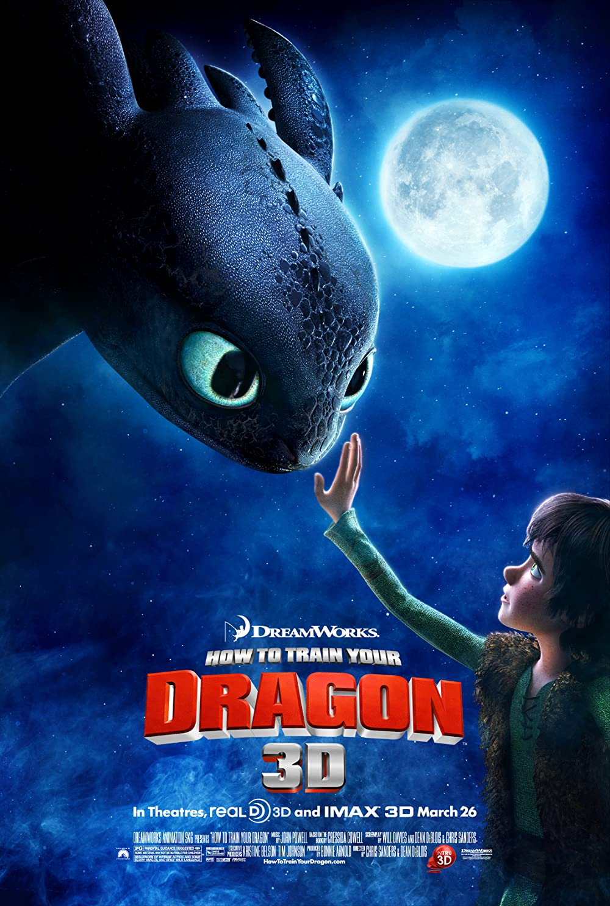

The viking village of Berk, located on a remote island, is attacked frequently by dragons, which take livestock, damage property, and endanger lives. Hiccup, the awkward fifteen-year-old son of the village chieftain, Stoick the Vast, is deemed too scrawny and weak to fight the dragons. Instead, he creates mechanical devices under his apprenticeship with Gobber, the village blacksmith, though Hiccup's inventions often backfire. During one attack, Hiccup uses a bolas launcher to shoot down a Night Fury, a dangerous and rare dragon of which little is known. No one believes him, so he searches for the fallen dragon on his own. He finds the dragon in the forest, tangled in his net, but cannot bring himself to kill him, and instead sets him free.
